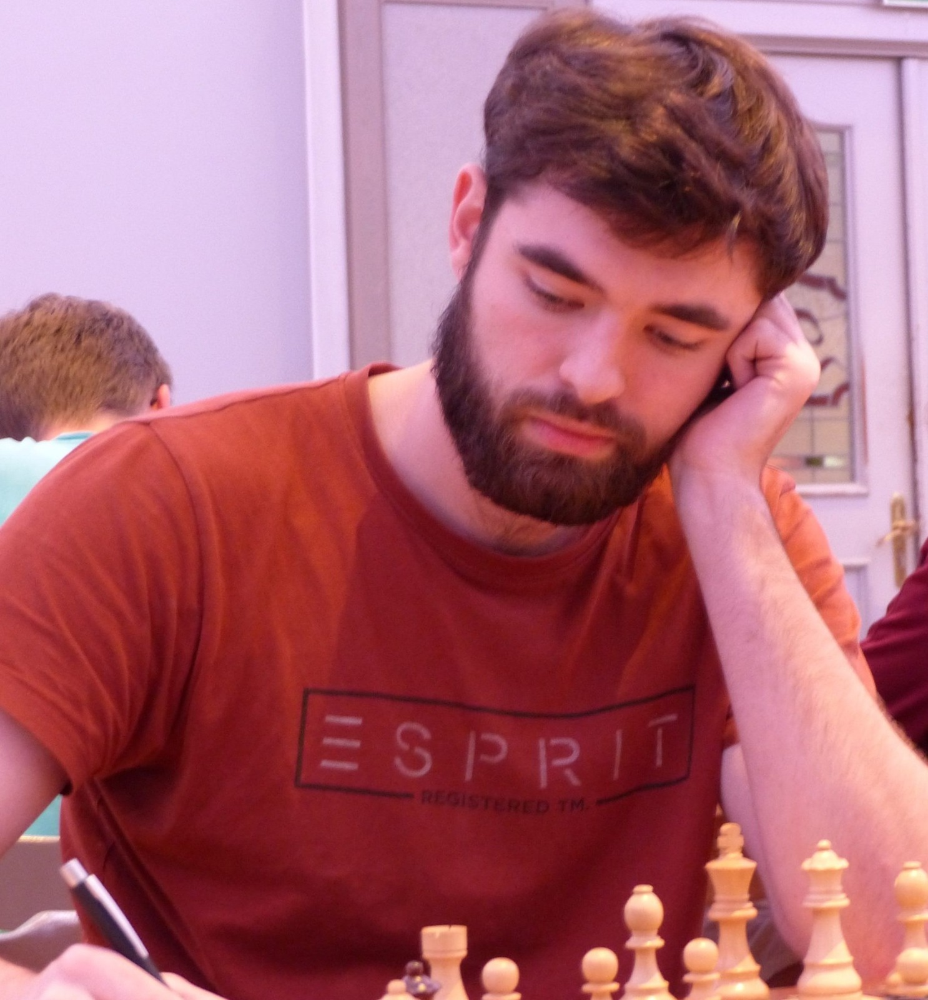

♞ CM Artur SteinhauerSchach mit Struktur, Geduld und echter Begeisterung
Mein Name ist Artur Steinhauer. Ich bin Candidate Master (CM), aktiver Turnierspieler mit rund 2200 DWZ/Elo und seit mehreren Jahren als Schachtrainer tätig – besonders für Kinder, Jugendliche, Vereinsspieler und ambitionierte Anfänger.
Mir geht es nicht darum, Varianten auswendig zu lernen, sondern Schach wirklich zu verstehen. Wer die Ideen hinter den Zügen begreift, spielt selbstständiger, kreativer und erfolgreicher – am Brett wie im Turnier.
Verständlich, strukturiert, individuell
Jeder Schüler lernt anders. Deshalb passe ich Tempo, Inhalte und Beispiele an die jeweilige Spielstärke und die persönlichen Ziele an – ob erste Grundregeln oder gezielte Turniervorbereitung.
Echtes Schachverständnis
Ideen und Pläne verstehen statt Züge auswendig lernen – das trägt dauerhaft.
Individuell angepasst
Klarer Aufbau, der sich am Niveau und den Zielen jedes Einzelnen orientiert.
Geduldig & motivierend
Besonders im Kinder- und Jugendtraining zählen Geduld, Freude und Erfolgserlebnisse.
Mit vielen Schülern gewachsen
Mehrjährige Erfahrung im Einzel- und Gruppentraining, im Kinder- und Jugendtraining sowie im Grundschulschach.
Eine junge Schülerin steigerte sich in rund einem Jahr auf sicheres Vereinsniveau.
Ein Schüler verbesserte seine Online-Spielstärke deutlich und spielt heute ambitioniert.
Anfänger werden strukturiert an Taktik, Strategie und Turnierpraxis herangeführt.
Alle Angaben anonymisiert. Ergebnisse hängen von Einsatz und Ausgangslage ab.
Lernen wir uns kennen
In einem unverbindlichen Gespräch finden wir heraus, wie ich dich oder dein Kind am besten unterstützen kann.